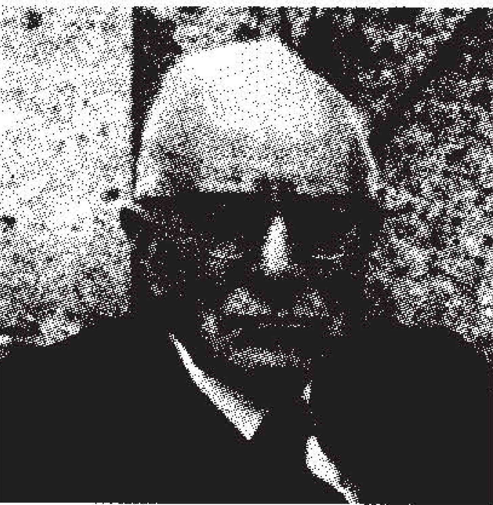
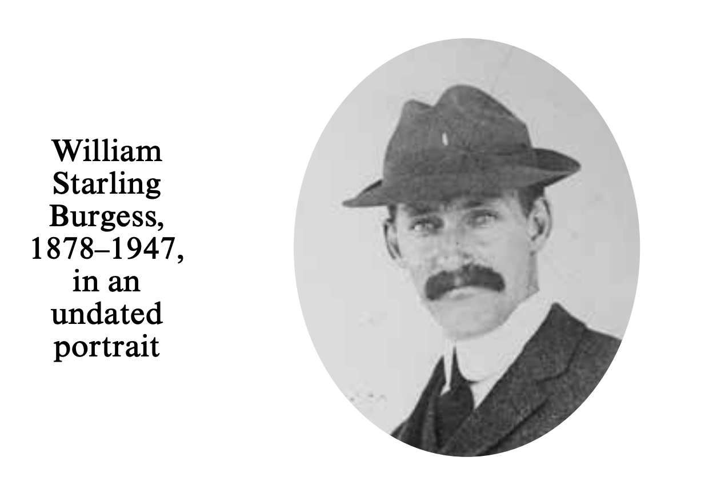
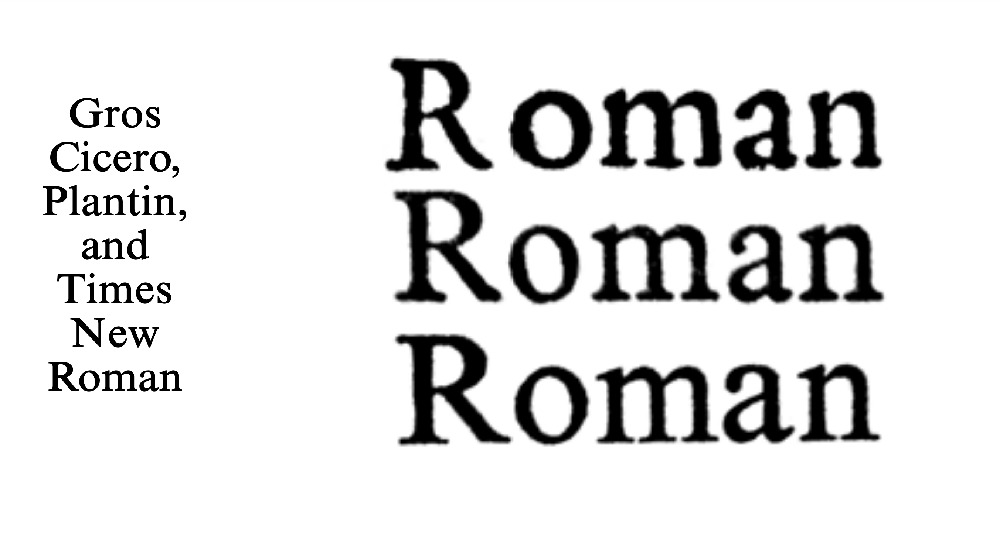
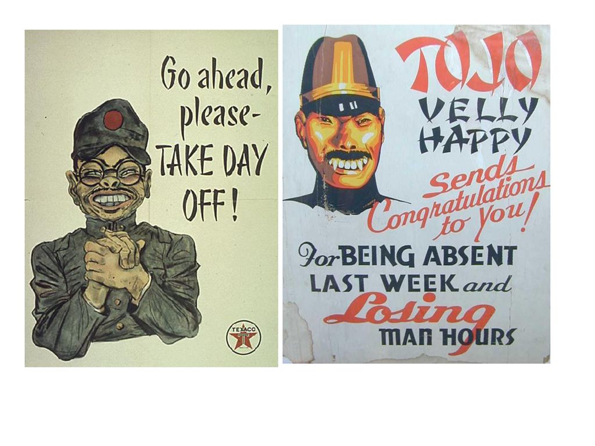

J. G. Ballard's 1974 novel Concrete Island culminates in a scene of writing. Speeding along the M4 outside London, architect Robert Maitland crashes his Jaguar through a guardrail and into a vast triangle of waste ground beneath an intersection of overpasses, finding himself injured and unable to climb the steep embankments to rescue. As night falls he manages to ignite the engine of the mangled Jag with the car's. cigarette lighter, but the brief, intense blaze fails to halt the rush of traffic overhead. Left to sleep in the charred hulk of the automobile, Maitland awakens to notice a retaining wall across the island: "The rain-washed concrete shone brightly in the sunlight like an empty noticeboard. A message scrawled across it in three-feet-high letters would be legible to drivers on the motorway."' Desperately in need of writing instruments, he harvests the blackened, burnt rubber terminals from the engine's distributor caps, using them to mark out "in wavering letters" on the concrete: "HELP INJURED DRIVER CALL POLICE." Soon, storm clouds gather and it begins to pour, and Maitland is forced to take cover, fashioning a crude shelter in the crumbling remnants of a basement doorway. Bruised and feverish, he gazes down:
A small printing shop had once been here, and a few copper-backed letterpress blocks lay around his feet. Maitland picked one up and examined the cloudy figures of a dark-suited man and a white-haired woman. As he listened to the rain he thought of his parents' divorce; the uncertainties of this period, when he was eight years old, seemed to be replicated in the negative image on the letterpress plate, in the reverse tones of this unknown man andwoman.
It is a brief, reflective moment, and when Maitland emerges following the storm he notices that the letters of his handscrawled message have been "reduced to black smudges." Delirious with fever, he finds that "the rounded smears were exactly those.of a wind.: shield wiper," and wonders: "Was he still trapped inside his car? Was the entire island an extension of .the-Jaguar, its windshield and windows transformed by his delirium into these embankments? Perhaps the windshield wipers had jammed ... and were tracing some incoherent message on the steaming glass."
This scene of writing and erasure, interrupted by the interlude in the basement print shop, traces the contours of western typographic historyfrom the marks made by the human hand and the mechanical reproduction of text and image made possible by the printing press, to a vision of an automated, machinic writing that exceeds both human agency and comprehension. So too, the contraction of the island in Maitland's mind to the space of the crashed Jaguar is mirrored by its expansion in Ballard's narrative to encompass the recent history of Great Britain: as he explores the overgrown rubble Maitland discovers the remains of a churchyard, Edwardian houses, an air-raid shelter, and a postwar cinema. Similarly, the shattered body of the Jaguar echoes Maitland's own, just as the inhabitants he soon encounters__.: a. r adical hippie dropout named Jane Sheppard and a brutish former acrobat known only as Proctor-double his riven psyche. The scene itself is doubled, too, when Maitland attempts to trick a reluctant Proctor into spelling out a rescue message on the retaining wall under the pretense of teaching him to-write his own name: "Already the wavering letters of his first alphabet had become strong and wellformed. Using both hands he struck at the concrete slope, slashing his A's and X's side by side." Maitland traces out words for Proctor to copy, but soon enthusiasm gets the best of him and he begins to mix up the letters "into an indecipherable mass," eventually rubbing out the message and refusing to go on.
The failure of Maitland's writing lesson, read off against the earlier episode in the ruins of the printshop, foregrounds what remains "uncertain" and "indecipherable" in the mechanization of human language. For, the writing lesson is the lynchpin of all western typography. Beginning in the fifteenth century, humanist handwriting, secured through a pedagogy of imitation and a disciplining of the body, transformed the hand into a writing machine. 5 While lowercase roman letters emerged from this prosthetic pen-inhand imitating the "litterae antiquae" of Carolingian man~scripts, capitals traced their origins to the letters engraved on classical roman monuments, the work of stone carvers wielding the simple machines of hammer and chisel. Geoffroy Tory's 1529 Champ Fleury was one of a number of Renaissance treatises that. subsequently sought to delineate the proportions of the ideal Roman capital "according to the human body and face," thus submitting both typography and the body to the logic of geometry and the instrumentality of the grid, compass, and rule. With the invention of the printing press the humanist's bicameral script was further adapted to mechanical reproduction through the cutting of punches and the casting of molds, a process that largely remained unchanged until the end of the nineteenth century, giving rise to the digitized roman fonts we use today.
In what follows I thus want to use Ballard's narrative to reflect on one of the more curious episodes in recent typographic history- the controversy surrounding the creation of Times New Roman, perhaps the most ubiquitous of all typefaces. So the story goes, in 1929 an advertising request by The Times of London prompted a tirade against the paper's outdated typography by Stanley Morison, imminent British typographer, type historian, and advisor to the Monotype Corporation, leading to his appointment as "typographical advisor" to William LintsSmith, the manager of The Times.6 A series of trials followed in which sample pages of the paper were set in a variety of existing faces, but Morison was dissatisfied and decided that a new, supremely legible, economical, modern, and decidedly English typeface was needed. A special committee was convened, and at a meeting on January 28, 1931, two approaches were approved: a thickened version of Eric Gill's Perpetua, and a "modernized Plantin."
Focusing his energies on this second option, according to Morison he "excogitated" the design of Times New Roman, "pencilled the original set of drawings, and handed them to Victor Lardent, a draughtsman in the publicity department of Printing House Square [ where The Times was located] whom he considered capable of producing an unusually firm and lean lihe." 7 It was from these finished drawings that the final metal punches, in both text and titling sizes, were cut by Monotype after a large numlier of revisions and refinements. In the interim the matter of the change of the paper's masthead to an all~caps roman was resolved, and thus, on October 3, 1932, Times New Roman debuted in the pages of The Times to universal acclaim. Released for general use the following year, it has become in subsequent decades one of the most recognizable typefaces of all time.
However, with Morison's death in 1967 his biographers almost immediately began to identify inconsistencies in the official account of his role in the design of Times New Roman. 8 Although he could render hand-drawn "comps" for the creation of layouts, Morison was not a draftsman, 'and it was unlikely that he had "pencilled" the forms and given them to Lardent to redraw. Later, in Printing The Times (1954), Morison recounted a decision "to modify the normal Plan tin," suggesting that existing metal types had been used as a starting point. When questioned in January 1968 Victor Lardent was unable to recall specifics, but did tell biographer James Moran unequivocally that Morison had not given him any drawings, but instead had "handed him a photographic copy of a page from a book printed by Plantin to use as a basis."
The precise nature of this "photographic copy" has subsequently become the source of considerable speculation. Was it merely a type specimen of Monotype Plantin? Or perhaps it was a photographic reproduction of a much older, original page of Robert Granjon's Gros Cicero type, first cut in the sixteenth century, or a later impression of it, as typographer Walter Tracy has argued? 10 Measurements from the first metal types for Times New Roman bear a close mathematical resemblance to those for Monotype Plantin, and the speed with which the initial designs were completed would suggest some form of preexisting model, since Renaissance print samples provide only rough outlines to work from, requiring considerable, time-consuming refinement and recasting.
Still, this ur-form of Times New Roman-and who was really responsible for ithas remained elusive, and Morison's own remarks in a 1937 letter to the American type p.istorian D. B. Updike only served to cloud the issue: "It is my one effort at designing a fount. I wish it could be redesigned, but it seems to be doing its job day by day in The Times. It has the merit of looking as if it had not been designed by anyone in particular." Who designed Times New Roman, then? Morison himself does not seem entirely sure, and the doublings that trouble the accounts of its creation would seem to require a lost original of uncertain agency, a “photographic copy” whose adaptation would appear to be designed by no one in particular. Indeed, Tracy, in his summary assessment of Times New Roman concludes that its “chief defect” lies in that it “lacks the insignia of true creation,” precisely what Morison finds to recommend it.
Fast-forward to 1994, when the question of the origin of Times New Roman gained new traction thanks to Mike Parker, a former director at Linotype and co-founder of Bitstream, one of the first digital type foundries. In his article “W. Starling Burgess: Type Designer?” in the journal Printing History Parker made the radical suggestion that the original drawings for the font were in fact created in the early 1900s by the American yacht designer, aviation pioneer, and engineer William Starling Burgess.14 Parker described the “discovery of an ancient set of pattern letters” among “the remnants of the Lanston Monotype Machine Company of Philadelphia,” which had been purchased by the Canadian printer and typographer Gerald Giampa, and documentation tying the designs, designated Series 54, to Burgess.
Although Giampa, citing a vague “bond of confidentiality,” had withdrawn access to the archive, Parker explained that he had uncovered evidence to corroborate a rumor that had circulated in the “drawing office at Mergenthaler Linotype in the 1960s and ’70s” that “Times Roman had been designed by a naval architect in Philadelphia who had committed suicide.”15 What followed was a highly detailed set of speculations relying heavily on Burgess’s biography and second-hand information suggesting that in 1904 Burgess had drawn and commissioned Series 54 from Lanston Monotype, the American counterpart to the British Monotype Corporation for use by his design firm. Although work on the face had already begun, Burgess, in Parker’s account, was soon distracted by a new-found interest in aviation and, following a 1918 fire in his Boston offices, found himself unable to pay for the completion of the project, and Series 54 was shelved.
According to Parker, in 1923 Lanston then attempted to sell Series 54 to a fledgling Time magazine under the name Time 54, even going so far as to create a trial setting and masthead design, but its development was also never completed. And so it only remained for the drawings and pattern letters to make their way, in 1931, from Philadelphia to the Monotype Works in Salfords outside London and into the hands of Stanley Morison, then out of his depth and struggling with the design of a “modernized Plantin” for The Times.
Parker provides neither reproductions of the original drawings he claims to have seen, nor any independent evidence. Instead, he relies on an elaborate set of formal comparisons using digitized versions of Monotype Plantin, Lanston Series 54, the Lardent drawings, and Monotype Times New Roman alongside photographs of what he claims are original brass Lanston pattern letters, a capital “B” and lowercase “f” stamped twice in their lower left corners with the numerals 54 and 362, Monotype’s series numbers for both Lanston 54 and Times New Roman. It was a bold claim, made on the scantest of evidence, which occasioned a reply in the pages of Printing History by four respected figures in the field: attorney and printer Harold Berliner, Morison biographer Nicolas Barker, type designer Jim Rimmer, and president of the Printing Historical Society John Dreyfus.
In a measured, if rather blistering, rebuttal the four respondents dismantled Parker’s argument, sweeping aside its fog of irrelevant details, remaining careful to avoid attributing “dubious motives” to Parker himself. Berliner finds no trace of the “bond of confidentiality” that Giampa cited as the reason for his withdrawal of the archive, nor any drawings marked Series 54 in the Lanston holdings at the Smithsonian Institution in Washington, DC.
Barker, in turn, questions Parker’s appeal to digitized versions of typefaces and, after close scrutiny of the test setting of Time 54 and the trial Time masthead reproduced in Parker’s essay, shows that neither could have been produced as early as he claims. Reviewing the accepted prehistory of Times New Roman and citing extant memos from the Monotype type drawing office in 1931, Barker concludes that the “photographic copy” handed to Lardent by Morison must have been an image of a later printing of Granjon’s Gros Cicero type, likely Max Roose’s Index Characterum Architypographiae of 1905.17 The proof, he argues, is the appearance of the lowercase “a” in the final design, a remnant of the substitution of an “a” from another font when Granjon’s original types were acquired by the Plantin-Moretus Museum in Antwerp and used to print Roose’s Index, which then served as the model for Times New Roman.
Perhaps most damning, Barker further suggests that the photographs of the double-stamped pattern letters in fact depict patterns for Times New Roman from 1961, onto which the numerals “54” had been added after the fact.19 Rimmer, quoted at length in a letter to Dreyfus, reveals that the fragmentary “Burgess Italic” that Parker also reproduced in his essay was in fact drawn by him at Giampa’s request to accompany a 1993 revival of Time 54, for which a “cloudy outline” and digital files were supplied. Moreover, Rimmer states that Giampa had also given him a set of punches identical to the “54” that appears on the doublestamped pattern letters.
One might assume that these detailed counterarguments would have finally put Parker’s claims to rest, but to the end of his life he never wavered. Instead, he proceeded to develop Giampa’s “Burgess” into a full-fledged typeface in six weights, renamed Starling, which was commercially released in 2009. To accompany the release Parker’s tale regarding the “true” origin of Times New Roman was largely taken as fact, and a number of press outlets picked up the story, including the Financial Times. 20 With Parker’s death in 2014 his theory circulated once again, and today, no less an authority than Wikipedia includes a mention of Burgess in its entry on Times New Roman.21 Nevertheless, a comprehensive biography of Burgess published in 2015 cites no “reference whatever in extant Burgess letters, notebooks, autobiographical writings, or in his surviving library to typography or to the art and craft of type design.” “Nor, finally,” the author adds, “was Burgess, despite taking basic courses in mechanical drawing at Harvard, a proficient draftsman.”
So the question remains, who designed Times New Roman? Parker, a typographic expert and respected industry veteran, could hardly be described as a crank or a dupe. Giampa, meanwhile, who died in 2009, is a shadowy figure whose motives remain obscure—financial gain? character assassination? legitimate historical recovery? As recounted in the Financial Times, a 2000 flood destroyed any remaining evidence in the Lanston Monotype archive that Giampa had purchased, and supposed original documents reviewed by Parker in the Smithsonian in 1996 are reportedly contaminated and no longer accessible. A 1941 bomb blast near Monotype’s London offices had also destroyed many of the original records concerning Morison’s work on Times New Roman.23 Still, surely an authority like Parker must have seem something that convinced him, and the persistence of the Burgess story and its grudging acceptance within design history points, at the very least, to an unresolved need to come to terms with its creation. This detour into the gentlemanly world of typographic controversy is traversed by a complex series of doublings that locate the development of Times New Roman firmly within the “body machine complex” of the early twentieth century.24 Naval architect, aviation pioneer, and later co-designer of the Dymaxion car with Buckminster Fuller, Burgess doubles Morison, authority on the mechanization of typography and a railroad enthusiast who rode on the footplate of a Gresley A1 Pacific locomotive all the way to Edinburgh and enthusiastically attended the departure of the high-speed Flying Scotsman on its first non-stop trip along the London and North Eastern Railway.
Like J. G. Ballard’s Maitland behind the wheel of his Jaguar, both were men whose “intimacy with machines” is of a piece with a culture of locomotion in which agency is uncertain, and the human body, no less than the type body, is submitted to new disciplinary regimes—the timetable, machine work, and the grid—that are shadowed by the spectre of the automaton. In fact, in a promotional pamphlet published by The Times in conjunction with the debut of the new redesign of the paper Morison explained that the need for the new typeface was a respose to the dramatic changes in reading habits occasioned by the acceleration of human transport:
It is evident that there must be changes in typography as long as our social habits are open to variation. When it was founded, The Times was largely read in coffeehouses; in the nineteenth century it came to be read in trains; to-day it is largely read in cars and airliners. Reading habits, dependent on social habits, will not remain constant. Neither must newspaper typography remain constant.
Who better, then, to have designed Times New Roman than an architect-engineer and future car designer? Or perhaps “Burgess” might simply stand for the uncertainties that obtain in the collision of bodies and technologies whose contours the writing scenes in Ballard’s Concrete Island circumscribe, and which lie at the very heart of typographic history, from the humanist pen and the printing press straight through to the TextEdit software that this essay is being written in—the “no one in particular” whose authorship Morison takes as “the chief merit” of Times New Roman. By way of conclusion this question of agency suggests one more doubling, and a silence that thus far marks a glaring absence from any account of Stanley Morison: the figure of Beatrice Warde
Former librarian for ATC, the American Type Founders Company, and ex-wife of Frederic Warde, director of printing at Princeton University, Beatrice Warde joined the Monotype Corporation in London in 1927 as editor of its house journal, The Monotype Recorder, and was soon promoted to head of publicity, a position she held until her retirement in 1960. Warde’s initial appointment had come thanks to an article she had written for the typographic journal that Morison edited, The Fleuron, in which she had unraveled the question of the origins of the typeface Garamond, having tracked down the original sixteenthcentury punches in Europe. It was an impressive piece of typographic detective work, published by Warde anonymously under the pseudonym Paul Beaujon. Monotype, it was said, had been shocked when a woman arrived to take the job.
Warde and Morison would become lifelong friends and close colleagues, and it was to her that he sent a cable announcing the committee’s approval of the decision to change the masthead of The Times, the final element in the paper’s conversion to Times New Roman: “DIRECTORS AND ALL EDITORIAL EMINENTISSIMI UNANIMOUS ROMAN HEADING.”29 Morison, who famously disdained the use of first names, addressed his letters to Warde at this time “Dear P,” and it was thus as Paul Beaujon—a male moniker that seems to have been something between an open secret, an inside joke, and a mark of respect—that Beatrice Warde came to join the fraternity of men who led the typographic renaissance that began after World War I, although she was still unable to attend meetings of the Double Crown Club.
Warde’s other great contribution to the theory of typography is the essay “The Crystal Goblet, or Printing Should be Invisible,” first delivered as a lecture in 1930 and still read by every undergraduate design student, in which she advocates for the transparent quality of good typography. The essay could easily serve as a brief for Times New Roman, now so commonplace that one contemporary commentator has stated that, “To look at Times New Roman is to gaze into the void.”
Recalling the “negative image” of the “unknown man and woman” that occasions Robert Maitland’s reverie in the ruined printshop in Concrete Island, it is tempting to imagine what Beatrice Warde’s role in the development of Times New Roman might have been, and the status of the still-elusive “photographic copy” that Lardent claims to have been handed by Morison. As an accomplished type scholar and researcher Warde most certainly knew her way around an archive, and as an American and former librarian at ATC she had industry connections in the States. Her ex-husband, Frederic, we know, attended the Lanston Monotype School in Philadelphia to learn how to work the machinery.31 As a publicist at Monotype, Warde would also, no doubt, have had regular dealings with the publicity department at The Times, and could have recommended Victor Lardent—whose primary occupation was the drafting of advertisements—for his “unusually firm and lean line." Could “Paul Beaujon” —that doubly-gendered vanishing mediator —have been the source of the “photographic copy” that served as the model for Times New Roman? That, we cannot know. After all, invisibility, Warde insisted, is the sign of good typography, just as every type designer knows that the spaces between letters —the counterforms — are just as important as the marks on the page. So too, the questions and doublings that persist around the design of Times New Roman point to the collision of bodies and technologies that shape the development of modern letterforms—and the lapses and failures that attend them.
What do you think Owens sees in the relationship between the character Robert Maitland and the creation of Times New Roman? Choose a typeface, research its history. What themes emerge? Relate it to a work of fiction.
In his writing, Owens explores the complicated history of Times New Roman and Compares it to the events of JG Ballard's story 'Concrete island'. In this story, the main character is stuck in a waste ground beneath an intersection of an overpass, in his disparity, he attempts to use blackened rubber terminals from his car to write an SOS sign. Alas, his efforts are wasted because the rain soon washes it away. Throughout the story, he makes similar attempts to no avail. The story investigates marks made by human hands, the technological production of print and image through the printing press and a vision (as it is only a thought of panic in the story) of automated machine writing or as we now call it, computing. Owens points out the parallels of this evolutionary complexity, relating it to the story of Times New Roman. An important quote that I discovered in this reading and that I feel summarizes what he is trying to elude to is "To look at Times New Roman is to gaze into the void". Because there is so much to decipher and speculate in its history, why bother worrying about who gets the credit for sketching it, photographing it etc, when even now in the 21st century, we have recorded and are studying the names of the people who were in any way shape and form related to it. As Beatrice Ward says, 'Printing should be invisible', just as the rain washed away Maitland's sign for help, history has taken away the certainty of creation and originality is questioned. That being said, I feel that it is important to acknowledge the individuals who we know worked hard behind the scenes to aid the technical production of typefaces like Times New Roman, such as the women in the Monotype Type Drawing Office.
The first known example of faux-Hanzi was called ‘Mandarin’. It was designed by Henry H. Thorp for the Cleveland type foundry in 1883. We can assume this then gave way and became the blueprint for all faux-Hanzi fonts to come thereafter. The typefaces in this category intentionally ignore the writing rules of Hanzi because they simply cannot replicate the intricate style of Hanzi going left to right, top to bottom as well as the order in which each of the strokes are written. Unlike English where the strokes can be written in any order, Hanzi has an order that dictates the style of each eight fundamental strokes which informs the overall character, which cannot be replicated in the Latin version of the faux Hanzi fonts. Moreover, there are no circular shapes in Hanzi making the circular shapes in the Latin version such as O, B, C and D, look stiff and awkward. You’ve probably seen Faux-Hanzi fonts in commercial places like Chinatown on takeout boxes and plastic bags since they were widely used by Chinese immigrants to help them thrive commercially. However, historically they have also been used on posters and products that mocked and discriminated against the Asian population, especially in the USA when it was used as fear-mongering propaganda.
The creation of 'Mandarin' coincidentally reminds me of the most recent novel I read (skimmed through) which is 'Severance' by Ling Ma. In the book, the protagonist, Candace Chen, who is a first-generation Chinese immigrant, is living in a dystopic New York City taken over by a deadly virus called Shen fever. At the beginning of the book, Candace is eluded to have a nostalgic attachment to 1980s-style American consumer capitalism which seems to "obscure" her awareness of how she herself is implicated in processes of capitalist exploitation and gentrification. I am referring to one scene in particular where she is watching Woody Allen's 1975 film "Manhattan" which showcases New York in a highly romanticized fashion, instead of looking at the New York outside her apartment window. Such instances remind me of Karl Marx's idea of a "false consciousness" created by the media to distract us from our exploitive realities. I feel that this scene relates to 'Mandarin' because of this very reason. As something that was once created by white people to mock and satirize the intricate beauty of actual Mandarin typography; 'Mandarins' use in the media that had directed it toward Asian people made it an almost concrete connotation to the Asian American dream and entrepreneurial heritage, through its sad reclamation by small Asian businesses who wanted to appeal to the white masses in order propel their (usually food) businesses and seem authentic to them.